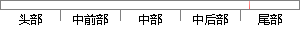

如果歌曲未被添加，提示“歌曲添加成功”
片段位置图

相似结果|
相似片段 1：设计如表5-5所示：表 5-5歌曲基因信息管理模块测试用例设计歌曲基本信息分页显示 分页显示正常 正常添加歌曲基因信息 提示添加成功 正常删除歌曲基因信息 提示没有权限 正常添加歌手信息 提示添加成功
相似片段 2：的最后一个位置。当添加歌曲时，如果是在收藏播放列表中，会先判断选中的歌曲是否已经在收藏列表中，如果不在，则添加成功，而如果是在随机播放列表中，则不允许添加歌曲。音乐库其它两个标签的显示界面效果图如下
相似片段 3：，提示设置成功与否的提示信息异常事件流：1.单击设为铃声按钮，无法弹出提示信息2.提示设置成功，结果却没有正确设置表 3-12 增加事件用例名称：增加歌曲简要描述：用户可以向列表添加新的歌曲前置条件
相似片段 4：，并且重复播放按钮上面显示的图标也要相应的切换，具体显示的参照设计图，如果当前没有歌曲在播放，则不进行重复模式之间切换，并且给出用户提示；点击添加 /删除喜欢列表按钮，会把当前播放歌曲在播放列表中添加
相似片段 5：AddSong(SongName,SingerID,AlbumID,MelodyID,SongTypeID)添加歌曲 歌曲名称、歌手ID、专辑 ID、曲风 ID、流派 ID是否添加成功
相似片段 6：，系统打开歌曲清单，用户选择歌曲加入该列表中后置条件 系统成功新建播放列表，用户可以从列表中选择播放歌曲2)播放列表的删除有添加的自定义服务功能必然有相应的删除功能，需要注意的是在进行列表的删除工作时，系统会对用户是否要删除当前列表的一个判断提示，避免用户误操作的影响。
|
※ 片段修改建议 ※
近似词参考：- 如果：若是 假如 要是
- 提示：提醒
- 成功：乐成 胜利
系统自动生成语句：若是歌曲未被添加，提醒“歌曲添加乐成”
注：本片段修改建议为系统自动生成，仅供参考。